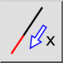
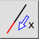
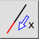
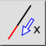

Allunga / accorcia
Barra degli strumenti / Icona:
 

Menù: Modifica > Allunga / accorcia
Scorciatoia: L, E
Comandi: lengthen | shorten | trimamount | le
Questa è una traduzione automatica.
Barra degli strumenti / Icona:
 

Menù: Modifica > Allunga / accorcia
Scorciatoia: L, E
Comandi: lengthen | shorten | trimamount | le
Questo strumento può essere utilizzato per allungare o accorciare linee o archi di una determinata quantità.